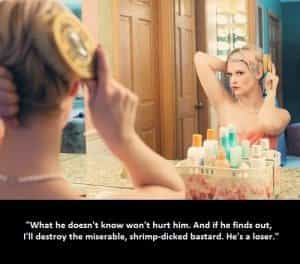

Bob Smith is a man in search of the truth. His favorite quotes are, "We're all fools on this earth, and I can be no different"; "I know it's true, I read it at the LIE-brary"; and "The truth is not misogynistic, it's just the truth".


Many years ago, I became friends with a very hot blonde in her early 30’s who was dying of cancer. Due to her impending death, she decided that it was okay to relay a vast amount of inside information to me, regarding what women were really all about. She volunteered this information. I have never forgotten what she told me, and it has served me quite well over the years.

Here is a summary of the ten things she told me about the true nature of women, which were related to me over the span of a couple of weeks, shortly before her passing:

We are constantly poking, prodding and testing a man, in order to find out what his boundaries are. If he has no boundaries, we will destroy him, especially if he loves us. A man has to have boundaries, and he has to outline them precisely, and he has to force us to adhere to them with the power of his conviction and the power of his action. If he doesn’t do that, we will beat him over the head with his weaknesses (his lack of boundaries) until he breaks.
Our faces are fake (makeup), our hair is fake (dyed), our boobs are fake (some of us), everything about us is fake. Most especially when it comes to what is inside of us. We lie constantly, because we are far worse, character-wise, than even our closest friends or lovers will ever know, and we desperately fight to keep all of that hidden.
We are looking for our true daddies, basically – the idealized daddies that we never had – somebody who can see through all of our false fronts and call us out on our bullshit and put us in our place. The problem is, those type of men are very few and far between.
There are no exceptions to this rule. We use that as cover, to try and make the man feel guilty for questioning our fidelity. What we are really saying here, is, “I will fuck whomever I want and you’d better keep your nose out of it or I’ll cut you off from my pussy and I’ll ruin your freaking life if you keep pressing the issue.” If we really cared about you, and if we really weren’t cheating on you or planning to cheat on you, we would tell you something like, “I am not cheating on you, I love you, and I would never do that. I don’t care if we have to stay up all night, for the next week, and go over every single shred of doubt that’s currently troubling you about this. I have nothing to hide, I would never cheat on you, and I don’t want you thinking these things about me. Please tell me exactly why you think I am cheating, point by point, and I will do anything and everything that I have to do to prove to you that I’m not cheating, in order to ease your worried mind.”
Vastly, exponentially, hornier than men. A woman will do just about anything, sexually speaking, so long as she is fairly certain she won’t get caught. For example, we will occasionally go out of town in order to rendezvous with a man we’ve been longing to fuck, and/or to have multiple sex partners in the same evening, and/or at the same time.
This is something that hot women do, most especially. In our minds, it is a natural desire, and a natural thing, and so long as nobody else finds out, it’s “game on”. Women are receptacles for cock, that’s how we have been biologically designed. Nothing feels better to us than being completely filled up with multiple penises, than being the center of sexual attention, than being the object of unbridled group lust. Since it’s something we can’t risk doing on our home turf (don’t shit where you eat), we have to think outside the box, in order to get our boxes completely satisfied. And you might find this shocking, but many women – many, many women – have sex with dogs on a routine basis. This is just one example of how insatiable we truly are.
I can see why you might not believe it, to which I say, look really hard at all of the women you know who have dogs. Look at women who have dogs whenever you see them out on the street, in the act of walking those dogs. Or at the park. You will notice that most of them have male dogs – the vast majority, in fact. This isn’t a coincidence. And look at all the female teachers who are exposed in the media for having sex with underage students. We have no self-control when it comes to sex – or anything else, for that matter. To our way of thinking, losing control is what makes sex great. Doing anything that is taboo is what makes sex great.

We lie to our so-called female friends and pretend we are loyal and faithful to them, just like we do with the men in our lives. Secretly, we are jealous of each other, and we want all of the desirable things that other women have—most especially when it comes to our female friends’ things.
And we consider men to be things. If one of our friends has a hot man, we want him to want us. We will do everything we can to seduce him. Not because we really want him—we don’t really want anybody. We do it because we are rarely happy, and we don’t want our girlfriends to be happy, either, and we want to boost our own egos more than anything else.
And after we get him to fuck us, when our girlfriends find out that he has had sex with us, that’s when we finally get what we wanted in the first place. If we break up the previously happy couple, that’s fine, too. It’s all about our pussy, not hers. It’s about winning.
They also lie about not wanting men with large penises. If we told the actual truth about the number of different men and women we’ve slept with, and if we told the actual truth about our fervent desire for big dicks, our pool of potential suitors would shrink drastically, to the point where it would completely dry up. So we lie. Most often, we will claim that we’ve had between three and eight sexual partners in our lifetime. And, to our way of thinking, it isn’t a lie, because if we had five sexual partners last Saturday evening, and our man asks us how many sexual partners we have had, and we answer, “Five”, well, technically, we aren’t lying.

And because we dislike ourselves, we fervently hate any man who doesn’t see through our bullshit. The more a man loves us, the more we hate him. The more he overlooks our sins, and the more he fails to see how corrupt we are, and the more he gives us the benefit of every single doubt – the more we despise him. We will escalate our bad behavior until we finally break him and he wakes up and realizes how worthless we are and what a fool he has been for believing in us.
We want a man whom we can’t have. We want a man who honestly doesn’t give a fuck about us, who doesn’t care if we come or go. That’s the kind of man we will pursue. Call them bad boys or call them whatever you want, that’s the kind of man we want – period. The kind of guy who will make us orgasm, crudely, and give us a huge sexual thrill in the bedroom, and then discard us like used toilet paper, and fuck our female friends afterwards, just because he can. (Just like we would do with his male friends.)
And all hot women are narcissistic masochists. We hate it when things are going well, especially if they continue to go well for long periods of time. We know down deep that we are fucked-up and not worthy of anything that is truly good. So when things are going well in a relationship, we eventually sabotage it. We just can’t help ourselves in this regard.
We could have the greatest, most handsome, most well-hung husband in the world—a one-of-a-kind man who makes all of our girlfriends jealous; we could have the greatest children in the world, who are beautiful, well-behaved and ambitious; we could have the most enviable career imaginable; we could have all of the money and prestige and the truly good things in life, and we could repeatedly tell ourselves over and over, and believe, on the surface, that we would never cheat on our husbands. But down deep we know that it’s a lie. Because one day, we could walk into a grocery store, and some bad boy could whisper just the right combination of words in our ear, and the next thing you know, we’re at the Motel 6 getting it in the ass. That’s just how we are, and any woman—especially a hot woman—who says otherwise, is a liar.
Over the years, my deceased friend’s words have proven to be spot-on, in the vast majority of cases. And if they ring true from your own personal experience as well, then I am more than happy that I shared them with you here today. I know that my deceased friend would be thrilled to know that I have shared this information with the manosphere. After all, she used to be a hottie, and she’s now dead, and by giving me the inside scoop on her female competition, she continues to beat them—she continues to “win”—even from beyond the grave.
Read More: The 7 Most Common Lies Women Tell In A Relationship